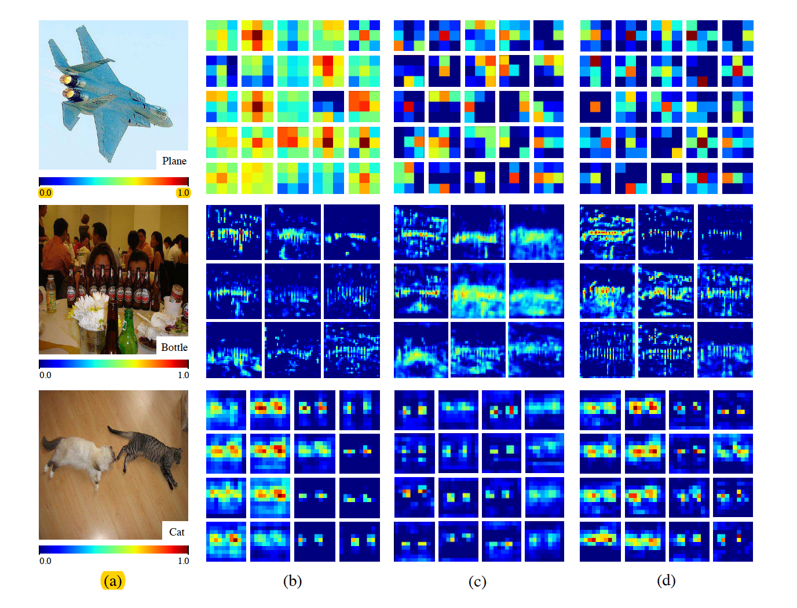
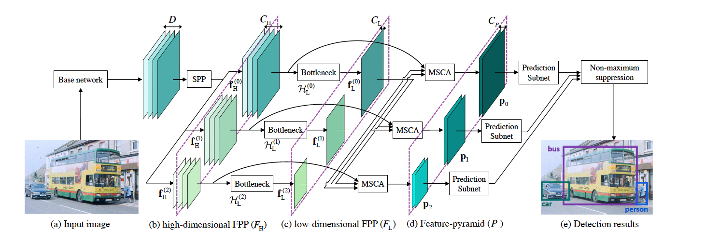
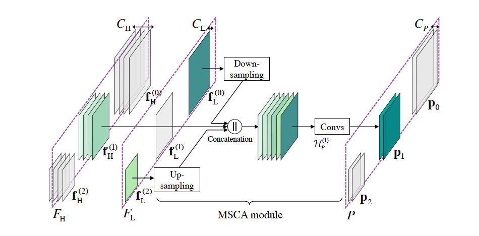
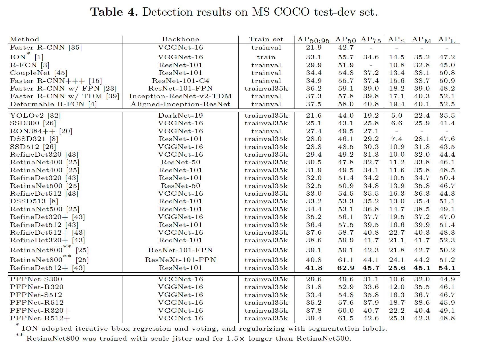
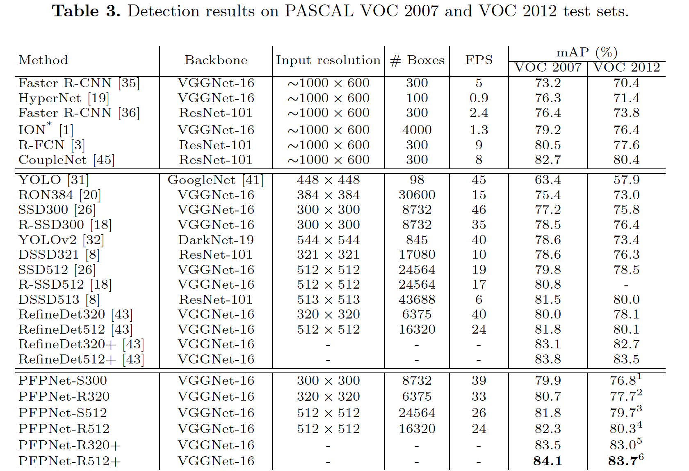

Parallel Feature Pyramid Network for Object Detection
URL:https://arxiv.org/abs/1612.03144
ECCV2018的一篇论文,这篇论文从某种程度上来说是为了解决小物体检测的问题，作者从feature map特征表示好坏的角度来分析目前常用检测模型的一些不足。论文分别可视化SSD、FPN、PFPNET（本文所提模型）对同样输入图片的feature map，从图中可以看出来SSD对物体的轮廓细节描述比较差，FPN对于一些遮挡物体的特征表示比较差。PFPNET则相对好一些，至于为什么好，以及这个结构设计的理由论文貌似并没有解释。

论文的主要内容：
- Parallel Feature Pyramid Network for Object Detection （PFPNET）模型结构：整体结构和RetinaNet比较像，不同的是PFPNET的multi-scale是一个并行的结构，和RetinaNet中的feature layer之间是一个串的结构是不一样的。模型首先利用Base Model（论文中用的是VGGNET-16）得到PFPNET结构的输入（DxWxH），然后利用SPP产生不同scale的feature map（FP Pool），不同scale的feature map长宽分别以2倍大小减少，对于每一个scale分别再利用Bottleneck Layer完成特征的转化。最后就是特征的融合（MSCA），模型基本结构图：
 - Multi-scale context aggregation（MSCA）：本文用的特征融合还是常见的concatenate方式，对于第n个分支最后的融合的特征Pn, 它有第一层FP Pool中与之对应的feature map以及第二层FP Pool中其他的N-1个feature map相融合而得到。然后对于最后的n个feature map分别进行cls + reg的任务即可。
 - Some details: 论文主要用refinedet和ssd作为baseline来比较，PFPNet-S代表和SSD相同的anchor设置，PFPNet-R代表和RefineDet相同的anchor设置，300和512则代表具体输入图片的size。
实验结果，论文主要对比的对象是SSD和RefineDett，其中从整体上来看在COCO数据集上PFPNET的表现貌似并不是最优的，作者则具体分析了在小物体等场景下的优势：


本博客所有文章除特别声明外，均采用 CC BY-NC-SA 4.0 许可协议。转载请注明来自 Out of Memory！